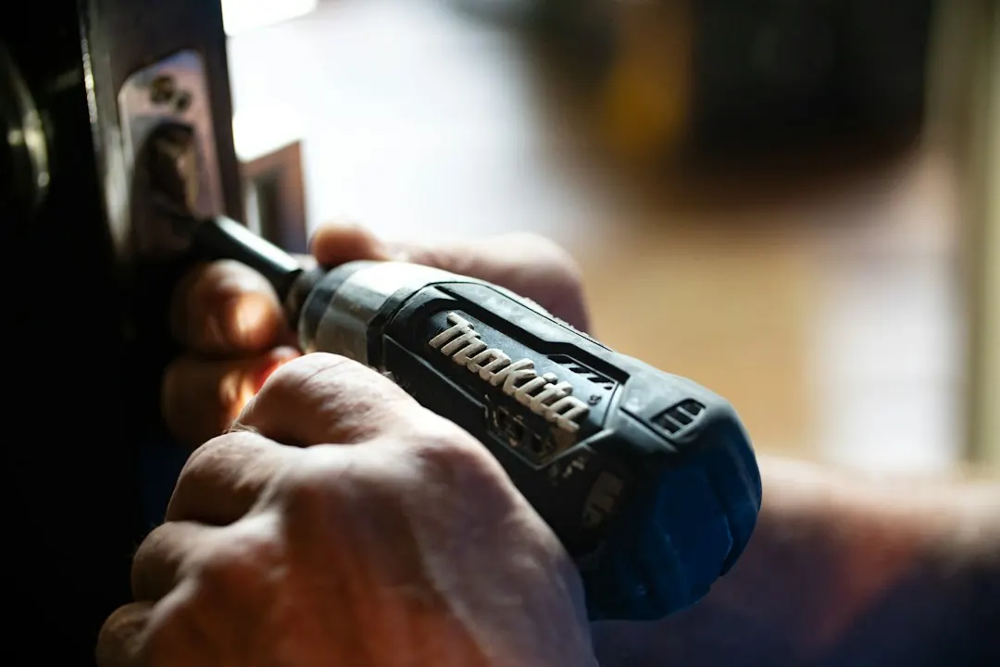

For electrical problems in Paddington, record the symptom and conditions, then have a licensed electrician trace the cause before work begins. Repeated safety switch trips, dead circuits, flickering lights, burning smells and smoke require different responses. Older Queenslanders, workers' cottages and terraces may contain wiring added over decades. Ask for a written scope and price, confirm the contractor licence, and keep the certificate of testing and compliance after installation work.
For homeowners comparing electrical repairs paddington options, the practical decision is whether the problem needs fault finding, a defined upgrade, or urgent attention from a licensed electrician.
Electrical Repairs Paddington Explained
The guidance published by Electrician Paddington starts with the behaviour of the fault. A safety switch that trips again immediately, one part of the house going dead, or lights dimming when the air conditioner starts can point towards different circuit or appliance issues.
Record when the problem occurs, including whether it appears at night, in rain, or when an appliance such as an oven starts. If the safety switch still trips with everything unplugged, wiring is more likely to be involved. That pattern gives the electrician useful information before testing begins.
- Repeated tripping calls for investigation rather than repeated resetting.
- Dead power points may involve a failed circuit or local connection.
- Flickering lights require testing of the fitting, circuit or connected equipment.
Smoke, a burning smell or an injury changes the priority. Call 000 first rather than treating the situation as a routine booking.
Older Paddington homes need a careful inspection
Old timber Queenslanders, workers' cottages and terraces may contain wiring added over several decades. A fault can be hidden in a cable run or loose joint, so resetting a switch or replacing a visible fitting may not address the cause.
Access also affects the work. In a lined timber Queenslander, new cable may run through the roof space or under the floor to avoid cutting open walls. Ask how the proposed route affects existing finishes, where new circuits will go, and what will be tested when the job is complete.
Kitchen and bathroom renovations can require new circuits, while a power point, light, fan or switch installation may be more limited. The quote should distinguish a defined installation from investigation of an uncertain fault.
For homes in Red Hill, Milton, Petrie Terrace, Bardon and Ashgrove, construction and wiring history matter more than the suburb label when estimating access and scope.
Know when a switchboard assessment is relevant
A board fitted with ceramic fuses does not provide safety switches across the home. Safety switches cut power when current leaks, including where current passes through a person. An upgrade can place that protection across the whole house, subject to the installation assessment.
Ask whether the existing board has ceramic fuses, whether safety switches are already present on all circuits, and whether testing of each circuit is included. These details define the job more clearly than a general request for a modern board.
In Queensland, homeowners may perform simple tasks such as changing a light bulb, tube or fuse, or resetting a breaker or safety switch. Work beyond those tasks is for a licensed electrician. Ask for the contractor licence number and check it in the online Electrical licence holder search.
After installation work, retain the certificate of testing and compliance with the property records.
Separate fault finding from a defined upgrade
Fault finding searches for the cause of an existing problem. A defined upgrade changes or adds an electrical installation with a known scope. The two should not be described as the same job when requesting a quote.
Include the affected rooms, appliances, access limitations, lined walls or ceilings, and what happens immediately before the fault. Ask the electrician to separate investigation, repair, replacement, access work and any follow up in writing.
A fault inside a wall cavity or roof space may require access that cannot be confirmed until testing identifies the affected circuit. A new power point, switch, dimmer, outdoor outlet, LED fitting or EV charger can usually be described by location and purpose before the visit.
An EV charger may require switchboard capacity work first. Ask whether that assessment is included and how the garage or carport location affects the cable route.
Who this guide applies to
This guide is for owners and occupiers of Paddington homes dealing with repeated trips, dead power points, flickering lights, renovation wiring or an ageing switchboard. It also applies to planned improvements such as extra power points, moved switches, dimmers, sensor lights, LED downlights, outdoor outlets, smoke alarms and a home EV charger.
Describe smoke alarms by their condition, including whether they beep or appear out of date. For interconnected systems, ask how the alarms will sound together when one detects smoke.
Confirm the licence, written scope, price before work starts and documents supplied at completion. The neighbouring guide to choosing electrical repair help in Paddington provides another checklist for comparing the next step.
- Describe the symptom. Write down what stops working and whether it happens with an appliance, at a particular time or in certain weather.
- Make the situation safe. If there is smoke, a burning smell or an injury, call 000 first instead of treating it as a routine repair.
- Check the licence. Ask for the contractor licence number on the quote and use the online Electrical licence holder search.
- Define the scope. Separate fault investigation, repair, replacement, access work and new installation in writing.
- Keep the paperwork. Retain the certificate of testing and compliance after installation work is completed.
| Situation | Likely starting point | Information to provide |
|---|---|---|
| Safety switch trips repeatedly | Fault finding and repair | What was running, what was unplugged, and whether the trip repeats |
| Ceramic fuse switchboard | Switchboard assessment | Board type, existing safety switches and affected circuits |
| Renovation or new fitting | Defined installation quote | Room, access, cable route and equipment to be installed |
Common questions
What should I tell an electrician about a tripping safety switch? Explain when it trips, what was operating, and whether it still trips with everything unplugged. That pattern helps identify whether testing should focus on an appliance or the wiring.
Can I reset a safety switch repeatedly? Resetting a breaker or safety switch is listed among simple homeowner tasks, but repeated tripping needs investigation. If it will not reset, describe that condition when requesting help.
Are older Paddington homes harder to rewire? Access can be more involved in lined timber Queenslanders because new cable may need to run through the roof space or under the floor. The layout and existing wiring determine the practical route.
What should an electrical quote include? It should distinguish a fault hunt from a defined installation and describe access, affected circuits, repair or replacement work, and the price before work starts.
What document should I keep after installation work? Keep the certificate of testing and compliance supplied after installation work is finished, along with the quote and description of the completed work.
This guide covers fault symptoms, older home access, switchboards, quotes, licensing and completion paperwork for residential electrical work in Paddington.